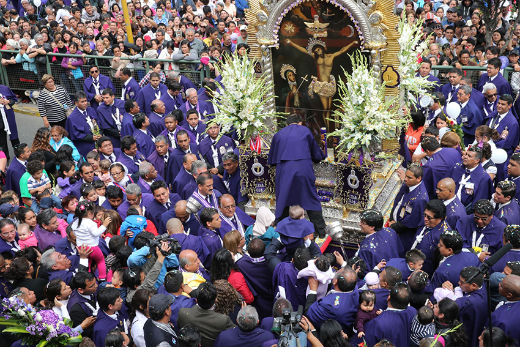

La confluència del credo amb els costums i les vivències han creat en la vida dels peruans prop de 3.000 a l’any, festes patronals, processons, carnavals i rituals, amb l’expressió de la fe de Déu, natura i la celebració de la llibertat. La gran majoria de festes del Perú tenen un aspecte místic.
Les celebracions principals són els pagaments a la mare terra que es fa en totes les regions, sota el concepte Pachamama (Mare Terra) per la seva generositat.
Costa: a la regió de la costa, els costums precolombines han patit una fusió amb les noves tendències de l’estranger. Producte d’aquesta influència, han sorgit balls tradicionals com ara la marinera a Trujillo, un ball ple de coqueteria, agilitat i elegància.
Serra: la regió andina alberga una mística i una solemnitat atorgada per ser la zona precursora de la identitat del país. Cadascuna de les seves expressions artístiques i religioses manté l’hegemonia d’un passat que va influenciar tota la regió de Sud-amèrica per mitjà de les ceràmiques, telers, religió i poder sociopolític.
Selva: finalment a la selva peruana, els costums tribals en cadascuna de les regions mantenen, en l’actualitat, una independència de la influència occidental brindant un halo de tradició i respecte per la natura que els envolta.
